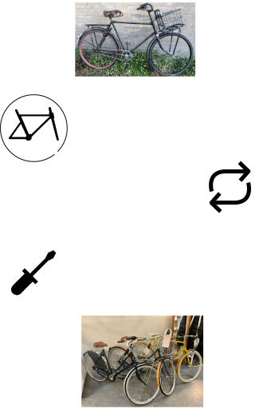

Gerestaureerde Old-timer
Ik vind het restaureren van old-timers heel bijzonder omdat naast dat er opnieuw leven wordt gebracht in objecten met emotionele waarde, worden er ook fietsen verkocht op een duurzame manier. En ik vind dat andere fietsenwinkels dus zeker een voorbeeld mogen nemen aan Re_cycle. Hieronder vindt je het proces van het restaureren van old-timers.
